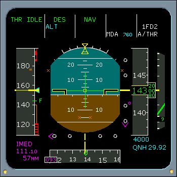

Flight Control Laws
Alternate Law - Description
The first level of flight control law degradation is pitch alternate law, roll direct law, and yaw alternate law. The autopilot may be available, depending on the specific failures. Alternate law reduces Vmo to 320 KIAS. The ECAM message F/CTL ALTN LAW (PROT LOST) is displayed. In alternate law when the landing gear is extended the flight control system reconfigures to direct law.
PITCH ALTERNATE - The pitch alternate law provides load factor demand mode, load factor limitation, high speed stability, low speed stability protections, and load alleviation function (on some A320s).
ROLL DIRECT - Roll direct law is a direct side stick-to-aileron and spoiler position relationship. A maximum roll rate of 30 degrees per second can be obtained in roll direct law.
YAW ALTERNATE - Yaw is yaw alternate or yaw mechanical, depending on malfunction.
|  |
In yaw mechanical law, there is no turn coordination or yaw damping.
RECONFIGURATION OF FLT CTL LAWS
If multiple system failures occur, the flight control computers will reconfigure to a degraded flight control law. See Reconfiguration of FCL Diagram.